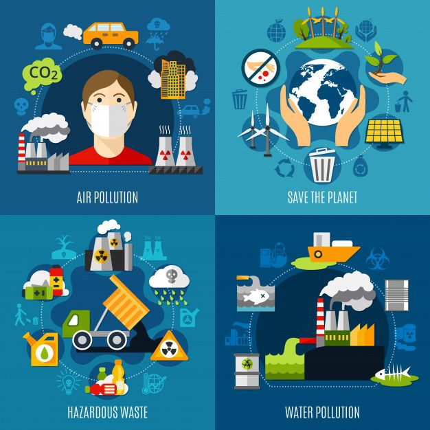

Health Effects of Environmental Issues

Environmental pollutants have various adverse health effects from early life some of the most important harmful effects are perinatal disorders, infant mortality, respiratory disorders, allergy, malignancies,
cardiovascular disorders, increase in stress oxidative, endothelial dysfunction, mental disorders, and various other harmful effects.
Environmental hazards increase the risk of cancer, heart disease, asthma, and many other illnesses. These hazards can be physical, such as pollution, toxic chemicals, and food
contaminants, or they can be social, such as dangerous work, poor housing conditions, urban sprawl, and poverty.
Air Pollution
Exposure to high levels of air pollution can cause a variety of adverse health outcomes. It increases the risk of respiratory infections, heart disease and lung cancer. Both short and long term exposure to air pollutants have been associated with health impacts. More severe impacts affect people who are already ill.
Major sources of ambient air pollution include inefficient modes of transport (polluting fuels and vehicles), inefficient combustion of household fuels for cooking, lighting and heating, coal-fired power plants, agriculture, and waste burning.
High air pollution levels can cause immediate health problems including:
- Aggravated cardiovascular and respiratory illness
- Added stress to heart and lungs, which must work harder to supply the body with oxygen
- Damaged cells in the respiratory system
Long-term exposure to polluted air can have permanent health effects such as:
- Accelerated aging of the lungs
- Loss of lung capacity and decreased lung function
- Development of diseases such as asthma, bronchitis, emphysema, and possibly cancer
- Shortened life span
Short-term exposure to particulate pollution can:
- Aggravate lung disease causing asthma attacks and acute bronchitis
- Increase susceptibility to respiratory infections
- Cause heart attacks and arrhythmias in people with heart disease
Even if you are healthy, you may experience temporary symptoms, such as:
- Irritation of the eyes, nose and throat
- Coughing
- Chest tightness
- Shortness of breath
Water Pollution
Bacterial, viral and parasitic diseases like typhoid, cholera, encephalitis, poliomyelitis, hepatitis, skin infection and gastrointestinal are spreading through polluted water.
It is recommended to examine the water quality on regular basis to avoid its destructive effects on human health.
Water and health. Contaminated water and poor sanitation are linked to transmission of diseases such as cholera, diarrhoea, dysentery, hepatitis A, typhoid, and polio. Absent, inadequate, or
inappropriately managed water and sanitation services expose individuals to preventable health risks
Chemical pollutants, such as pesticides, fertilizers, and heavy metals can cause serious health problems if ingested.
A person who ingests chemical toxins in their water can be at risk of:
- Cancer
- Altered brain function
- Damage to immune and reproductive systems
- Cardiovascular and kidney problems
Swimming in contaminated water can also trigger:
- Rashes
- Respiratory infections
- Hepatitis
- Eye irritation
Land Pollution
Land pollution can cause many things to the human body. People can be exposed to toxic waste and chemicals. Land pollution is also caused by disposal of harmful toxic wastes.
Long term health effects can include chronic respiratory disease, heart disease, and even brain damage.
As land pollution and soil erosion progress, animals are forced to shift habitats and adapt to new conditions. As a result, some species are at risk of extinction.
The potential effects of soil contamination on human health include birth defects and skin diseases.
Effect to human health
- Lands which are Contaminated with toxic chemicals and pesticides causes Skin cancer
- Human respiratory ailments
- Developmental deficiency in children
- Lung cancer
- breathing disorders